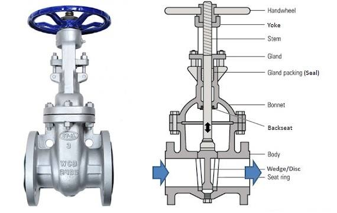
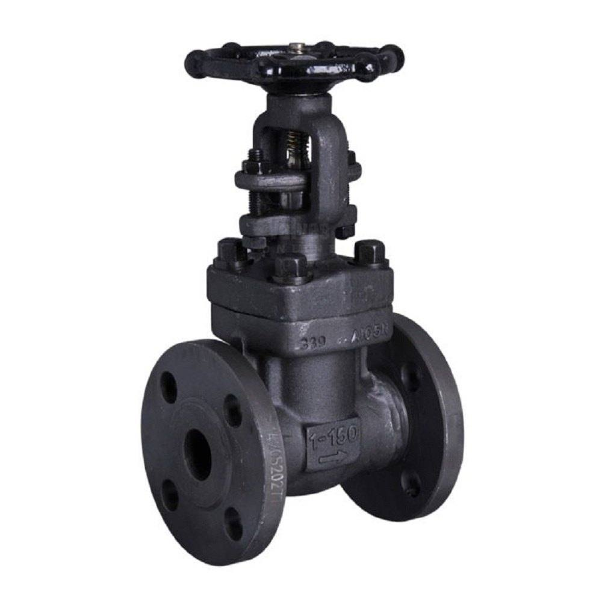
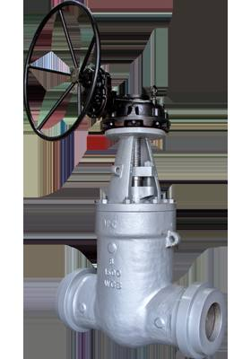
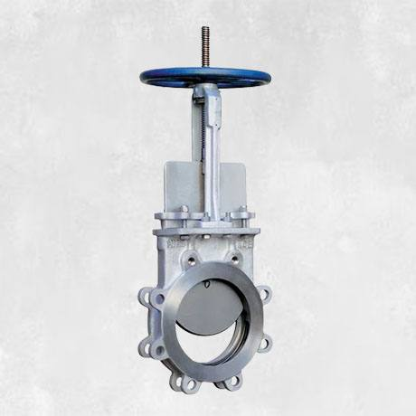
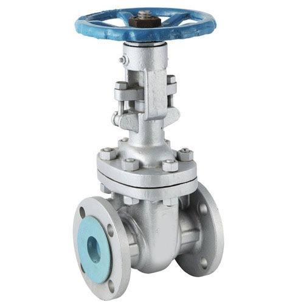

Industrial Gate Valves — Manufacturer, Supplier & Stockist
Gate valves use a flat or wedge-shaped gate to fully open or close the flow path in a pipeline. Navjivan Valves supplies a comprehensive range of industrial gate valves — including forged steel, bellow-sealed and knife gate types — for on/off isolation duty across oil & gas, power, water and process industries.

Product Overview
Gate valves are primarily isolation valves, designed to be either fully open or fully closed rather than used for throttling. When open, the gate is fully retracted from the flow path, resulting in a straight-through bore with very low pressure drop — making gate valves a preferred choice for pipeline isolation, main line shut-off and applications where minimal flow restriction is important.
Types of Gate Valves

Forged Steel Gate Valves
Built from forged steel body and bonnet for strength and durability in high-pressure, high-temperature service. The wedge-shaped gate moves up and down to control flow, guided by the body and seating against machined seats for a tight seal.

Bellow-Sealed Gate Valves
Feature a metallic bellows around the stem to provide zero-leakage, fugitive-emission-free sealing — used where stem leakage cannot be tolerated, such as in hazardous or toxic services.

Knife Gate Valves
Use a sharp-edged gate that can cut through slurries, fibrous media and suspended solids, commonly used in pulp & paper, mining and wastewater applications.

Bolted Bonnet Gate Valves
The bonnet is bolted to the body for ease of maintenance and internal access, a common design for general industrial isolation duty.
Specifications
| Design Standard | BS 1414, API 600, ASME B16.34 |
|---|---|
| Testing Standard | BS 5146, API 598 |
| Size Range | ½" – 36" (DN15 – DN900) |
| Pressure Class | 150 – 2500 |
| Body Material | WCB, WCC, WC6, WC9, C5, C12, LCB, LCC, CF8, CF8M |
| Seat | A105 + 13% Cr, A105 + Stellited |
| Trim | API Trim No. 1 to 16 |
| Face to Face | As per ASME B16.10 |
| End Connection | ANSI B16.5 (Raised Face Flanged), ANSI B16.25 (Butt Weld) |
| Operation | Manual, Gear Operated |
Specifications reflect the products currently supplied by Navjivan Valves. Exact availability may vary by size and material — please confirm with our team for your specific requirement.
Applications
- Oil & Gas Pipelines
- Power Plants
- Water Distribution
- Petrochemical Plants
- Refineries
- Steel & Metal Industry
Materials of Construction
Gate valves are supplied in WCB, WCC, WC6, WC9, C5, C12, LCB, LCC, CF8 and CF8M body materials, with A105 + 13% Cr or A105 + Stellited seats to suit the process temperature, pressure and corrosion requirements.
Key Features
- Full bore, straight-through flow path with minimal pressure drop when open
- Reliable bi-directional shut-off for pipeline isolation duty
- Robust forged or cast construction for high-pressure, high-temperature service
- Bellow-sealed variants available for zero fugitive emissions
- Wide size range from ½" up to 36" for main line and branch isolation